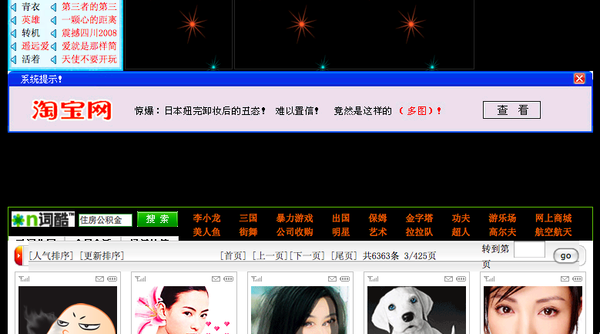

年初岁尾，无心恋战。这个时候通常是身在曹营心在汉，生产力最为低下的时候。但愿今年不再下大雪。
还是有一些好玩的事值得一说。
没想到“装不装用户”这个话题引起那么大的争议。我的想法其实很简单，用户都是被培养出来的，而不是被“装”出来的。在没有手机之前，你没法“装”成一个手机用户。没有Wii之前，你“装”得再好，也顶多装成PS或XBox用户，装不成Wii的用户，用户调查数据也不可能告诉你，有多少用户希望挥舞着遥控器打网球。
“装”的想法，来自对用户的错误认知，即认为用户的习惯是固定的，不可改变的。很多年之前，我和王建硕叫板，也是针对用户习惯是否真的不可改变。伟大的产品，总是超越用户的想象。在“装”的思维之下，可以去完善产品的使用细节，但无法创造伟大的产品。有时候，“装”用户甚至会强化用户的某些坏习惯。比如一篇严肃文章的旁边，如果有清凉低俗的图片，50%用户会去点击。但我认为，这种迎合是没出息甚至没出路的。下面这样的广告，装得倒是很像，但很可悲。
 http://www.5gme.com/attachment/200811/25/111_122762875793O3.png
第二件事。邵亦波的一篇《创业，管哪个事情最重要？》，也引起一些争议。争议的焦点在于，邵亦波是否过于看重产品，而忽视了市场。
作为投资者的邵亦波，当然不可能不知道市场的重要，毕竟他是投钱的人，他对回报的要求，要比我们旁观者更强烈。
我承认确实有极擅长做市场的人，他们能把所有的东西卖出去，并且卖出好价钱。对他们来说，卖什么不重要，重要的是有东西可卖。比如史玉柱或许就是个这样的人。但即使是史玉柱的金手指，也很难在他的第二款网游产品《巨人》身上，点出《征途》那样的金币。我想，90%以上的创业者都不可能是市场高手，他们大多从一个简单的想法起步，期望为市场提供一种产品或服务。对他们来说，命运系于产品，而非市场能力。
曹增辉说，2008年是中国互联网应用“断档”的一年。原因之一，我想是我们这个社会，自认为能做市场的人太多了，而做一件好产品，实在太难。就像每个人都会认为，自己能把iPhone卖得更好，但很少有人认为，自己能做出一部iPhone。但改变我们生活的原动力，是来自产品，而非市场能力。对创业者来说，与其迷信市场，不如迷信一款好产品自己的市场能力。
从另一个角度说，市场也是需要创意能力的。比如索尼爱立信的F305c手机，内置了与iPhone类似的重力传感器，所以他们策划的病毒营销方案，被用户普遍错认成iPhone。和菜头说这是“倒霉到家的广告”，但陈中不这么看，他认为这恰恰是一个成功的傍大款营销案例。说它成功，关键是最终一定要有人点破真相，告诉大家，这其实不是iPhone，而是索爱，从而引发第二次传播。大家在哈哈一乐之余，知道了索爱有在么一款产品。
陈格雷认为，营销2.0是一种不可控的传播过程，就像足球，一旦开球，你就不知道它会怎样运转。但策划一次可以有效运转的开球，还是需要高超的智慧和技巧的。营销2.0不是广告，而是一次有技巧的开球。